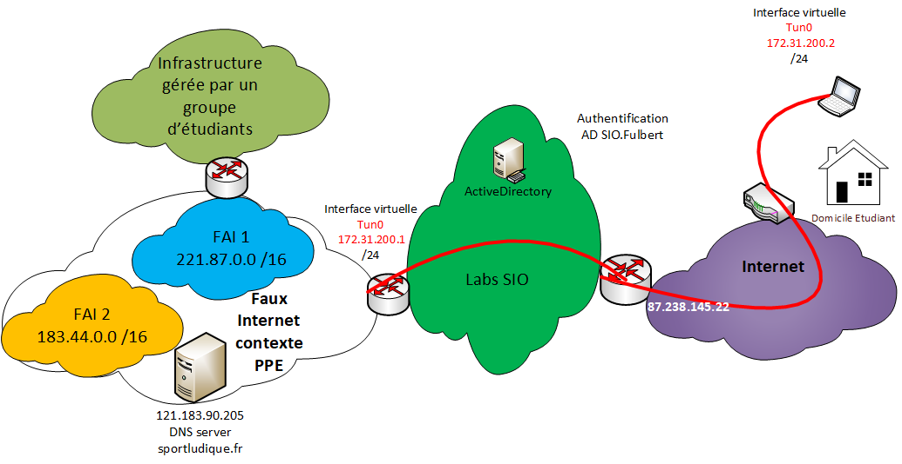

07 - OpenVPN
Mettre en place une solution d’accès sécurisée au réseau distant
Objectifs
L’objectif est de permettre un accès aux étudiants de leur domicile à l’infrastructure qu’ils gèrent au lycée dans le contexte de leur PPE.
Cet accès VPN utilisera une authentification des clients en se basant sur l’annuaire LDAP du domaine lan.sio.lyceefulbert.fr géré via notre contrôleur de domaine avec l’Active Directory présent dans notre LAN.
Cela permet d’éviter la génération d’autant de certificats qu’il y a d’utilisateurs potentiels du service. La solution de l’authentification basé sur le contrôleur de domaine permet d’utiliser le couple login/password habituellement utilisé pour ouvrir une session sur un poste de travail.
L’outil utilisé est OpenVPN installé sur le routeur de jonction entre le faux internet utilisé dans le laboratoire par les étudiants et le LAN du BTS SIO.
Bien entendu le routeur fourni par notre opérateur est configuré pour rediriger les flux vers le serveur VPN correspondant via une règle de PAT.
Voici un schéma récapitulatif:

Configuration
Configuration du serveur VPN pour la communication du domicile jusqu’au faux internet utilisé par le contexte sportludique.fr
De nombreux tutoriel détaillés pas à pas expliquent l'installation du serveur : exemple
Et voici les fichiers de configurations adaptés:
#################################################
# Config Server OpenVPN 2.0 #
#################################################
# Interface d'écoute
local 172.16.200.1
# Port d'écoute
port 1194
# TCP or UDP server?
proto udp
# "dev tun" will create a routed IP tunnel,
dev tun
# SSL/TLS root certificate (ca), certificate
# Certificat de l'autorité de certification
ca /etc/openvpn/easy-rsa/keys/ca.crt
# Certificat du serveur (cértifié par l'autorité)
cert /etc/openvpn/easy-rsa/keys/srvcert.crt
# Couple de clé privé, clé publique (ne doit pas être diffusé)
key /etc/openvpn/easy-rsa/keys/srvcert.key # This file should be kept secret
# Diffie hellman parameters.
# Configuration de la clé de session sur 2048 bits
# 2048 bit keys.
dh /etc/openvpn/easy-rsa/keys/dh2048.pem
# Configure server mode and supply a VPN subnet
# Définition de l'adresse de réseau virtuelle (du tunnel)
server 172.31.200.0 255.255.255.0
# Maintain a record of client <-> virtual IP address
# associations in this file. If OpenVPN goes down or
# is restarted, reconnecting clients can be assigned
# the same virtual IP address from the pool that was
# previously assigned.
ifconfig-pool-persist ipp.txt
# Push routes to the client to allow it
# Routes a pousser sur le client passant par le tunnel VPN
push "route 121.183.90.200 255.255.255.248"
push "route 183.44.0.0 255.255.0.0"
push "route 221.87.0.0 255.255.0.0"
# DNS servers
push "dhcp-option DNS 121.183.90.205"
# Ping every 10 seconds, assume that remote
# peer is down if no ping received during
# a 120 second time period.
keepalive 10 120
# Enable compression on the VPN link.
# If you enable it here, you must also
# enable it in the client config file.
comp-lzo
# You can uncomment this out on
# non-Windows systems.
user nobody
group nogroup
# The persist options will try to avoid
# accessing certain resources on restart
# that may no longer be accessible because
# of the privilege downgrade.
persist-key
persist-tun
# Logs du démarrage duservice
status openvpn-status.log
# By default, log messages will go to the syslog (or
# on Windows, if running as a service, they will go to
# the "\Program Files\OpenVPN\log" directory).
# Use log or log-append to override this default.
# "log" will truncate the log file on OpenVPN startup,
# while "log-append" will append to it. Use one
# or the other (but not both).
log /var/log/openvpn.log
log-append /var/log/openvpn-append.log
# Set the appropriate level of log
# file verbosity.
#
# 0 is silent, except for fatal errors
# 4 is reasonable for general usage
# 5 and 6 can help to debug connection problems
# 9 is extremely verbose
verb 3
# Silence repeating messages. At most 20
# sequential messages of the same message
# category will be output to the log.
;mute 20
#DISABLE CERT AUTHENTICATION
client-cert-not-required
duplicate-cn
#Authentification avec l'active Directory
#PLUGIN SECTION
#LDAP (Active Directory Authentication) PLUGIN
plugin /usr/lib/openvpn/openvpn-auth-ldap.so /etc/openvpn/auth/auth-ldap.conf
Configuration du plugin auth-ldap.conf :
<LDAP>
# LDAP server URL
URL ldap://ipserveractivedirectory:389 # modify this lin! Replace X's with your Domain Controller's local IP address
BindDN "CN=****uservpn*****,OU=profs,DC=lan,DC=sio,DC=lyceefulbert,DC=fr" #modify this line to!
Password "********************************" # Enter the password of the user account that OpenVPN will use to talk to your domain controller
Timeout 15
TLSEnable no
FollowReferrals no
</LDAP>
<Authorization>
BaseDN "OU=Eleves,DC=lan,DC=sio,DC=lyceefulbert,DC=fr" # MODIFY THIS LINE!
SearchFilter "(sAMAccountName=%u)"
RequireGroup false
<Group>
BaseDN "CN=Users,DC=lan,DC=sio,DC=lyceefulbert,DC=fr"
SearchFilter "(CN=901_SISR)" ##acces autorisés au seuls membre de ce groupe deuxieme année SISR)
MemberAttribute "member"
</Group>
</Authorization>